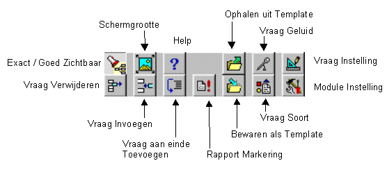
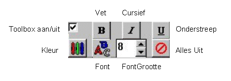
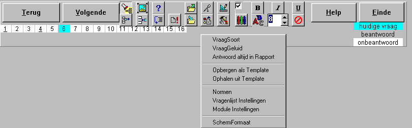
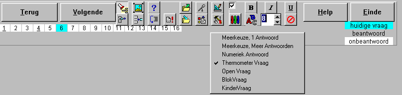
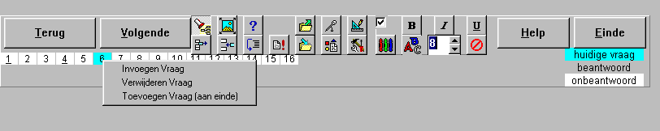
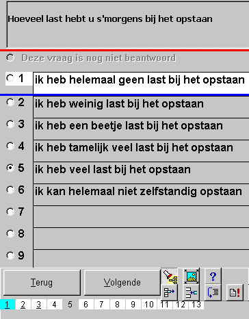
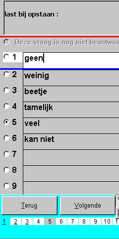

Edit Vragenlijsten
|
Weergave exact / alles goed zichtbaar |
|
De editor is een zogenaamde WUZIWUK-editor ("Wat U Ziet is Wat U Krijgt"), uitgebreid met Windows-95 bediening, dat wil zeggen hints, rechter-muistoets popup's en conditionele help informatie. Derhalve is onderstaande informatie slechts bedoeld als naslagwerk als u er echt niet meer uit komt. Wel is het verstandig om bij de eerste keer dat u vragenlijst gaat wijzigen deze paragraaf en de paragraaf Instellingen door te lezen.
Hoewel absoluut niet noodzakelijk, is het raadzaam om onderstaande volgorde aan te houden bij het aanmaken en wijzigen van vragenlijsten, omdat er logischerwijze bepaalde afhankelijkheden bestaan.
1. Desgewenst het algemene font van de vragenlijst instellen,
danwel het ingestelde font van de vragenlijst module als juist accepteren (is instelbaar)
2. Subschalen definiëren
3. De vorm en inhoud van de vragen instellen (inclusief fonts)
4. Als u overtuigd bent van de juistheid van de vraagsoort, de Scores toevoegen
5. Het Conditioneel Overslaan van vragen invoeren
7. Voeg eventueel de normen toe
6. Andere Vragenlijsten Conditioneel laten uitvoeren (Test Batterij)
Tijdens het aanmaken en wijzigen van een vragenlijst, zijn de onderstaande toolboxen aanwezig, waarmee de meeste handelingen snel kunnen worden uitgevoerd.

Met onderstaande toolbox kunnen de velden die voorzien zijn van uitgebreide opmaak faciliteiten, worden opgemaakt. Het betreft bij alle vragen het vraag-gedeelte en bij thermometervragen de extra tekst velden. De antwoorden velden zijn niet voorzien van extra opmaak faciliteiten.
Werking: Selekteer de gewenste tekst en druk op de gewenste opmaak toets. Met behulp van de knop "FONT" kunnen alle kenmerken in één keer worden ingesteld.

Rechter Muistoets PopUp Schermen 
Met Behulp van de rechter muistoets kunnen diverse popup schermen worden opgeroepen, waarmee alle instellingen zijn te bereiken.
In onderstaande figuren geeft de linker bovenhoek van een popup scherm de positie, van waaruit met de linker muistoets het betreffende popup menu kan worden opgeroepen. Het gebruik van de toolboxen is in het algemeen handiger.
Naast de hieronder getoonde popup-schermen, kunnen er per vraagtypen nog extra popup schermen aanwezig zijn, om de specifieke kenmerken van de desbetreffende vraag te kunnen instellen.



Vragenlijsten Wijzigen / Aanmaken 
Het wijzigen van een bestaande vragenlijst:
MIDORG / selekteer vragenlijst module / selekteer gewenste vragenlijst in de module-testlijst / Edit
Het aanmaken van een nieuwe vragenlijst:
MIDORG / selekteer vragenlijst module / New
Nadat de editor is gestart, krijgt u de eerste vraag te zien, precies zoals die ook aan de patiënt zal worden getoond (behalve de extra toolboxen).
Het font van de vragenlijst, font van de antwoorden, aantal antwoorden en hoogte van de antwoorden kunnen worden gebruikt om de gewenste globale layout te verkrijgen. Het programma zal automatisch antwoorden die geen tekst bevatten ondrukken in de opname mode. Dit kan gecontroleerd worden met de instelling "Exacte Weergave".
Zowel de hoogte van de vraag als de hoogte van de afzonderlijke antwoorden kan worden ingesteld. Dit instellen kan gebeuren door het slepen van de rode en blauwe splitter alsook via de rechter muistoets en het bijbehorende popup-menu. Door het instellen van de antwoord-hoogte, wordt enerzijds de afstand tussen de antwoorden ingesteld, anderzijds wordt hierdoor het maximaal aantal mogelijke antwoorden begrensd.
Als een grotere afstand tussen de vragen gewenst is, vergroot dan de antwoord-hoogte en sla geen antwoorden over. De antwoordnummering blijft namelijk bij het ontbreken van tussenliggende antwoorden ongewijzigd, waardoor een onlogische besturing voor de invuller zou ontstaan.
Het vraagveld (het bovenste veld met de vraag of verklarende tekst) is een zogenaamd Rich-Edit veld, hierin kunnen nagenoeg alle bekende opmaakcodes uit Word / WordPerfect worden gebruikt.
Ten behoeve van het rapport kan een andere tekst voor zowel de vraag als de antwoorden worden gegeven. Tijdens het editten is om te schakelen tussen de patientvorm en de rapportvorm middels F9 (of via het menu van de rechter muistoets).
Links is de patientvorm afgebeeld, rechts de rapportvorm, deze laatste is herkenbaar aan de lichtblauwe kleur van de balk aan de onderzijde van het scherm.
Door in de rapportvorm, de vraag af te sluiten met een dubbel punt ":" , wordt in het rapport het antwoord achter de vraag geplaatst.
Als geen extra tekst voor de rapportvorm aanwezig is, wordt in het rapport de normale patientvorm gebruikt.
Men kan de tekst van de patientvorm in zijn geheel naar de rapportvorm kopieren (om daarna te bewerken) via de rechtermuistoets.
 
Rechter muisklik op de onderste balk, kies vraagsoort, nu verschijnt een lijst met de beschikbare vraagsoorten, kies de gewenste vraagsoort.
Weergave Exact / Alles Goed Zichtbaar 
In de edit mode zijn bij de meeste vragen twee visualisatie-toestanden: "Alles Goed Zichtbaar" en "Exacte Weergave".
Als de instelling "Exacte Weergave" is gekozen, wordt de vragenlijst getoond op precies dezelfde wijze zoals de vraag uiteindelijk aan de patient zal worden getoond. In deze situatie is het dus onmogelijk lege tekstvelden te wijzigen, omdat deze ook niet getoond worden.
Als de instelling "Alles Goed zichtbaar" is gekozen, worden ook de lege tekstvelden getoond, bovendien worden tekstvelden omrand of anders gekleurd, zodat de tekstafbakening beter beoordeeld kan worden.
Het veranderen van de visualisatie-toestand kan met de rechter-muistoets:
1. Klik met de rechter-muistoets ergens op of in de buurt van een antwoord
2. Kies "Exacte Weergave" of "Alles Goed Zichtbaar" (slechts de niet-actieve instelling zal getoond worden)
De visualisatie toestand zal nu veranderd zijn.
Toetsenbord Besturing in Edit Mode 
In de edit mode zijn Tab en Enter vaak geldige tekens binnen de teksten en kunnen dus niet worden gebruikt voor de besturing.
PageUp en PageDown toetsen worden daarom gebruikt om naar een vorig / volgend antwoord te gaan of gebruik de knoppen volgende / vorige..
Teksten manipuleren kan met de normale windows-shortcuts (welke gebruik maken van het klembord); kopieren (ctrl-C), knippen (ctrl-X) en plakken (ctrl-V).
Alle teksten zijn eenvoudig te wijzigen door met de linker-muistoets of PageUp / PageDown naar het gewenste tekstveld te gaan en de tekst te bewerken. In velden waar meerdere regels kunnen worden ingevoerd, worden ook Tabs, Spaties en Einde-Regel geaccepteerd. Ook is het mogelijk om speciale tekens (zoals accenten) in de teksten te gebruiken.
Door "Alles Goed Zichtbaar" in te stellen worden ook de lege antwoorden getoond en wordt een kader rondom de velden getrokken. Door "Exacte Weergave" in stellen verdwijnen de lege antwoorden en de kaders rondom de teksten, en wordt het exacte beeld verkregen dat ook bij het praktisch gebruik zal optreden.
Accent tekens kunnen, als de computer 'goed' is ingesteld, op de normale Windows manier worden ingevoegd (type het accentteken, gevolgd door de letter waarop het accentteken van toepassing moet zijn). Vaak is de standaard-instelling van Windows 'niet juist' ingesteld. De juiste instelling kan op de volgende manier worden verkregen:
My Computer / Control Panel / Keyboard / Language / Layout = US-international
Speciale tekens en symbolen kunnen ook worden ingevoerd met behulp van de rechter-muistoets. Zorg eerst dat het gewenste font juist is, omdat de speciale symbolen verschillend kunnen zijn voor verschillende fonts.
1. Selekteer het gewenste tekstveld (muisklik of PageUp / PageDown)
2. Klik met de rechter-muistoets op de geselecteerde tekst
3. Kies 'Symbool Invoegen ...'
Nu verschijnt een overzicht van alle speciale symbolen in het HUIDIGE font
4. Klik op het gewenste symbool
Nu zal het gewenste symbool zijn ingevoegd op de plaats van de cursor.
Het gebruik van subschalen en normen vereist achtereenvolgens de volgende acties:
1.Definiëren van de subschalen en de bijbehorende afkortingen welke zullen worden toegepast in het Export
-bestand.
2.Antwoorden van één of meerdere subschalen voorzien, met een bepaalde weging te worden toegevoegd.
3.De normen invoeren waartegen de scores worden afgezet.
zie Vragen Overslaan
Door de uitgebreide mogelijkheden, kan de werking van font-instellingen soms tot verwarring leiden.
Daarom wordt eerst een aantal recepten gegeven, alvorens uit te leggen hoe de hierarchie van de font-instellingen werkt.
Recepten
De module font-instelling wordt alleen gebruikt voor nieuwe vragenlijsten.
De vragenlijst font-instelling wordt als default voor alle velden gebruikt. Het is erg belangrijk dat u dit font instelt op het meest gebruikte font in de vragenlijst.
namelijk als voor een bepaald veld, het font gelijk is aan het vragenlijst-font, wordt voor dat veld geen font-informatie opgeslagen. Dit betekent dat door het wijzigen van het vragenlijst font alle velden met een identiek font ook worden gewijzigd.
Bij het toevoegen van een nieuwe vraag, wordt altijd de fontinstelling van het template geladen.
© Copyright Instrumentele Dienst, 1999-2004